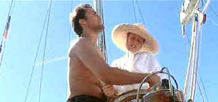

| Dead Calm/ B+,A |
| Warner/1988/96/ANA
2.35/FS 1.33 |
A claustrophobically stylish thriller set at sea, Dead Calm stays on a tense course through
varied waters.
John Ingram, an Australian naval captain, returns from a voyage to find
his wife hospitalized and their infant fatal victim to an auto crash. Ingram feels a sailboat trip
is the best treatment to alleviate the stress enormous guilt from which his young wife Rae
cannot free herself.
 |
| No, I wanna drive. ©Warner |
Nothing like the restorative healing salt of the sea with bright sun
and bracing surf to heal wounds. But once out to sea, you never know what to expect. The calm of
the Ingram voyage is broken by a vessel in the distance and an approaching dinghy. Hughie comes on
board in a frantic state with a tale of ocean horror, a voyage gone wrong and a sinking ship.
Ingram, maybe you shouldn't have let your curiosity get the best of you,
eh mate. Ingram's compulsion leads he and Rae from dead calm into roiling uncharted psychological
waters. John must fight the elements calling on his last breath of ingenuity to survive while Rae
must dig deep into her feminine wily reserves to survive the Dead Calm.
Nicole Kidman takes this cruise prior to Tom and is most fetchingly attractive
as Rae. Sam Neill always seems solid and his John Ingram in Dead Calm is no exception. Neill
makes Ingram's determination in the face of tough odds natural to the character. Billy Zane is very
well cast in a psychologically delicious role. Zane's flare to go overboard keeps his performance
on an insanely even keel.
Phillip Noyce captains this edgy flick for maximum effect. The voyage is
marked by few false moves, though perhaps a trifle more restraint would have delivered an
ultimately more satisfying and believable conclusion.
Dead Calm is a beauty of a DVD. In sunshine, the bright photography produces
rich DVD colors, saturated like a tropical treasure. In the dark bowels of a dying ship, shadow
detail is revealed effectively. The source material is perfect condition and the excellent contrast
range makes Dead Calm jump off the screen with ample theatrical pop. Detail is always in
perfect focus and there is no enhancement artifacts in evidence. The excellent Dolby Digital 5:1
mix features emphasized music that extracts the last bead of perspiration from the tension.
Surround information makes every splash and creak a home theater threat.
|
|
|
|


A film of extraordinary power that pulls no punches, The Grifters is not to be missed.
Hungry characters on the con, the short con, the long con, the self con.

Selections from the Feature Archive
include articles on Akira Kurosawa, Frank
Darabont, Blonde Bimbos, Hollywood Street Gangs, or Vietnam: The
Hollywood Pariah, and many more....
Film noir: The phrase hangs awkwardly on the tongue,
shadowy images peek out from behind half-closed doors. Click on the Noir and Noir
Again symbol for a look into the dark spaces of Hollywood's revisiting of film noir.
  A love of movies drives this small DVD production company, Synapse Films. Currently specializing in horror and cult films. Watch for
new DVD releases of film festival independents as Synapse branches out. A love of movies drives this small DVD production company, Synapse Films. Currently specializing in horror and cult films. Watch for
new DVD releases of film festival independents as Synapse branches out.

The DVD Forum is an international association of hardware
manufacturers, software firms and other users of Digital Versatile Discs (the "DVD
Format"), created for the purpose of exchanging and disseminating ideas and information about
the DVD Format and its technical capabilities, improvements and innovations.

News, information, features about current films in theaters and in the
pipeline. Easy to use interface.
|